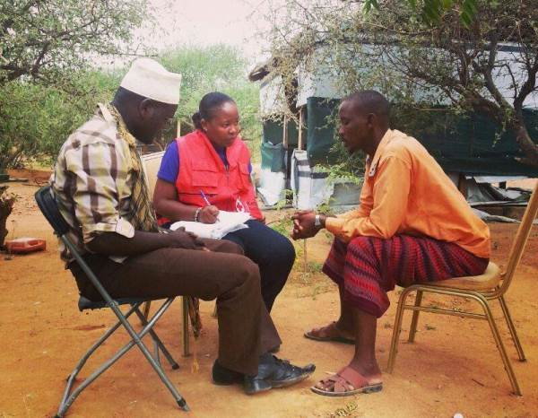

Insight Five: Response plans and preparedness measures should utilise volunteer network of the Movement, and the links that NS have to local government and community structures

Branch and community level Disaster Response Teams - reduced the time it took for information to be shared with headquarters, deployment and response times
KRCS branches in areas at risk of drought developed county contingency plans with county governments, in preparation for the forecasted drought. Maternal, Newborn and Child Health (MNCH) and Monitoring and Evaluation groups were established to monitor the situation on the ground.
DM strengthening project improved the technical skills of staff and volunteers leading to faster response time, wider reach, decentralization of interventions, better data collection and reporting
In Ethiopia, the volunteer network allowed the NS to be the only actor present in some affected areas.
In Somalia, Community Based Organisations and their Community Actions Plans were context specific and relevant; informing context-specific coordination, assessments and actions.